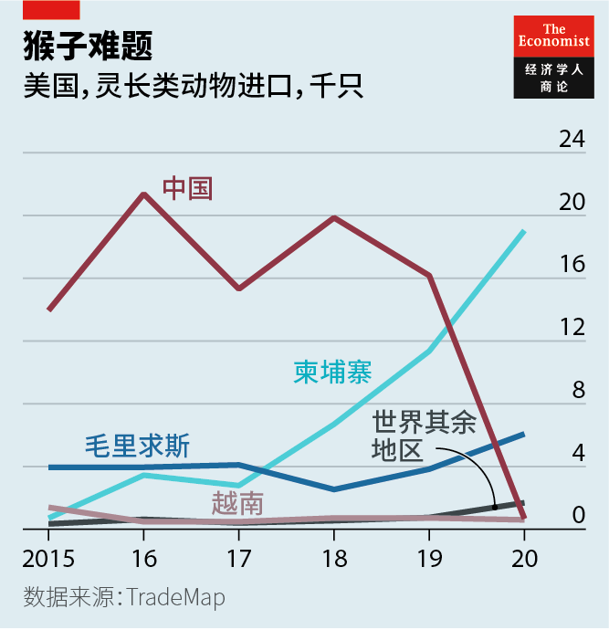
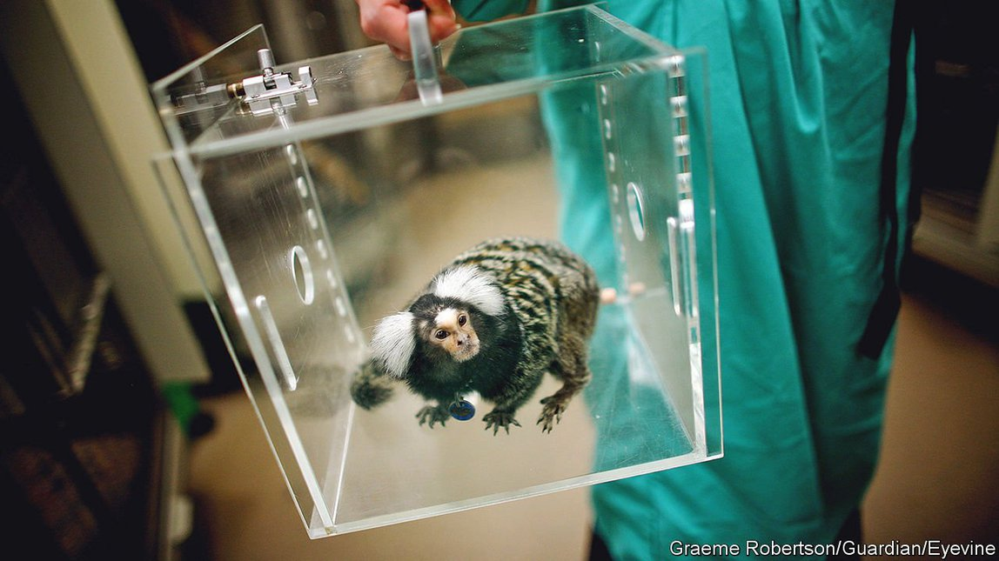
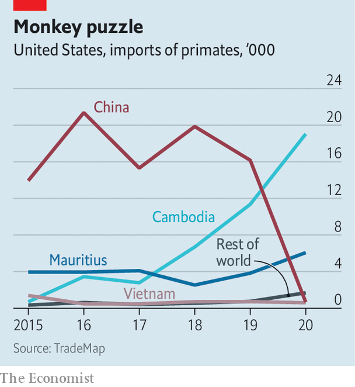

2021-08-31T14:20:04+00:00
猴子生意
对猴子实验的态度分道扬镳
许多国家对这类实验日益谨慎，而中国冲到了前头【深度】

二〇一四年，德国动物权利组织SOKO动物福利（SOKO Tierschutz）在图宾根的马克斯·普朗克研究所（Max Planck Institute）神经科学家尼科斯·洛戈塞蒂斯（Nikos Logothetis）的实验室里悄悄安插了一名看护员。六个月里，这名潜入者偷偷拍下了约100个小时的实验室工作视频，其中一些后来在德国电视台播出。视频显示一些猴子的头骨上被植入了金属插头，研究人员通过这些端口来探入和研究它们的大脑。一只猴子一口呕吐在了镜头上，看来是因为被插入电极时损伤了脑血管。
一石激起千层浪。大约800人聚集在洛戈塞蒂斯博士的实验室外，要求他停止用猴子做研究。他们叫他恶魔和凶手。他和家人收到了死亡威胁。他被指控违反了德国的动物福利法（后来撤诉）。于是在去年，他宣布自己的实验室将搬到中国。他正在上海创建一个新的研究设施，与中国脑科学顶尖研究人员之一、中科院神经科学研究所的蒲慕明合作。蒲慕明是于2018年在全球首次实现转基因非人灵长类克隆的团队的成员。洛戈塞蒂斯正在关闭他在图宾根的实验室。
用灵长类动物（主要是猕猴）做研究在欧美地区越来越不受欢迎。欧盟已承诺每五年重新考虑有关在研究中使用猴子的规定。它希望在将来某个未定的时间点结束所有动物研究。美国立法者正试图通过《研究和测试科学中的人道和现有替代方案》法案（HEARTS）。它将鼓励那些获得美国国家卫生研究院（NIH，美国最大的生物医学研究资助机构）拨款的科学家摆脱对动物的依赖。欧洲和美国的科研用猴子数量在过去五年里都持平或下跌了。
然而在东亚，尤其是中国和日本，在猴子身上开展的研究量在增长。这大部分是受到了创建和扩大国内灵长类动物研究计划的推动。上海的神经科学研究所等领先机构致力于培育被修改了基因组的猴子，以使它们的生理机能更接近人类，为研究人类疾病发挥更大用处。
这种对实验用动物的基因改造在世界各地的生物医学研究中都很常见，但几乎都只在小鼠身上进行。美国和欧洲没有一家实验室维持着整个谱系的转基因猴，但几家中国和日本的实验室有。而由于比起小鼠，猴子的大脑要接近人类得多，转基因猴很可能会比转基因小鼠更适合研究神经系统疾病。虽然这类实验在许多国家仍是禁忌，中国和日本已经冲在了前头。
活动人士提出，不应将任何动物用于研究，因为它们无法给出知情同意。动物权益组织“善待动物组织”（People for the Ethical Treatment of Animals）的科学政策专员朱莉娅·贝恩斯（Julia Baines）建议，在生物医学研究中，可以用体外研究（在培养皿和试管中展开研究，而不依赖活体动物）、计算机模拟和经各方同意的人体试验相结合的方式来代替使用包括灵长类在内的任何动物。
其他人，例如约翰霍普金斯大学的动物试验替代方案中心（Centre for Alternatives to Animal Testing）的研究人员，则主张在可能的情况下替换掉动物实验，在不可行的情况下改进对动物实验的运用。
在德国哥廷根大学用猴子做实验的神经科学家斯特凡·特罗伊厄（Stefan Treue）表示，每2000只实验动物中只有一只是猴子。但它们引发的争议要多得多。猴子的社交特性以及智力使得它们对科研用处很大，但也让这类实验非常令人不安。依赖于它们的研究比使用其他生物的研究更有价值，同时却也有更多伦理争议。神经科学家尤其认为猴子不可替代。
特罗伊厄说，对脑部的了解如此之少，以至于观察活体生物的脑活动是了解它如何工作的唯一方法。解剖死脑得到的信息有限。脑部只有在活动时才显现其复杂能耐。很少有人会自愿将电极植入自己的大脑。任何人对此给出的知情同意都很可疑。
威斯康星大学麦迪逊分校的心理学家阿利森·贝内特（Allyson Bennett）也支持基于纯科学的价值用猴子做实验。纯科学即没有明确设立目标的研究。她以1930年代初在意大利工作的生理学家维托里奥·埃尔斯巴美尔（Vittorio Erspamer）为例。他对在兔子和青蛙肠道中发现的化学物质的特性感到好奇，在研究过程中发现了血清素。
意外收获
如今，调节人体生成血清素的药物用于治疗各种抑郁症，改善了数百万人的生活，帮助防止了成千上万人死亡。但埃尔斯巴美尔不曾关注过抑郁或焦虑。他的发现在几十年后才成为此类治疗的基础。
依赖动物实验取得医学进展的清单很长，但贝内特特别指出了其中没有猴子不可能实现的一项：与大脑“对话”的假肢，被称为神经义肢。非人灵长类动物的大脑与我们的大脑足够相似，因此人可以使用在猴子身上研发出来的假肢。它们仍然很少见，但其原型已经让那些失去了肢体的人重新获得了与物理世界互动的能力。
中国正在成为使用猴子的那类神经科学研究的全球中心。而且潜在回报越来越高。神经系统疾病是全球仅次于心脏病的第二大死因。随着世界日益老龄化，帕金森氏症、阿尔茨海默症和痴呆症等疾病带来的负担日益沉重。与此同时，科技公司希望对大脑的理解可以帮助它们创造出更聪明的软件。军事将领们则认为神经科学的进步可以帮助他们构建更好的武器。
新冠疫情巩固了中国这种中心地位。去年2月，中国政府禁止所有野生动物出口以遏制野生动物贸易，这种贸易被视为新冠病毒等病原体从野生动物向人类传播的载体。科研用途的例外情况须经政府批准。直到最近，美国使用的大多数猴子都还是从中国的农场进口的。但出口管制已经导致了短缺（见图表）。
“中国保住自己的灵长类动物库存符合它在2015年宣布的一项长期战略：中国制造2025。”欧洲动物研究协会（European Animal Research Association）的柯克·利奇（Kirk Leech）说。脑科学是该战略的关键科研领域之一。为实现它，中国需要更多猴子。特罗伊厄说，中国已经明确了实验用灵长类动物是一种战略资源。出口不太可能恢复到以前的水平。
这令欧洲和美国处境尴尬。中国的农场很受科研圈子推崇。来自越南和柬埔寨的替代供应商的运作方式更接近于把野生猴子从其自然栖息地抓来。抓来的动物的健康状况和年龄各异，这不仅对动物自身造成更多创伤，对研究也不那么有用。在任何研究中增加危害和减少有用性都加剧了使用猴子的伦理困境。
与此同时，据利奇说，尽管中国把所有养殖猴子都留在本国，但中国神经科学的发展速度之快，使得哪怕国内的实验室也面临短缺。就在美国和欧洲的科研人员和动物权益活动人士就是否应该准许任何形式的灵长类动物研究争论不休时，中国和日本已经领先一步。
上海的神经科学研究所是新型大脑探针Neuropixel的最大买家。它们比目前使用的探针更容易安装进动物的大脑中。探针一上市，该研究所就购入3000个，安装在猕猴身上。这将使它能以前所未有的规模收集神经学数据。该探针还提供了一种相比更大的老式电极侵入性更小的研究途径，尽管把传感器置入大脑造成的危害总归不可小觑。
位于东京附近川崎市的实验动物中央研究院（Central Institute for Experimental Animals）的埃丽卡·佐佐木（Erika Sasaki） 培育了一个谱系的转基因狨猴。狨猴是一种原产于南美洲的小猴子。她和同样位于日本的理化学研究所脑科学中心（RIKEN Centre for Brain Science）的合作者正在创建狨猴大脑的三维图谱，以阐明灵长类动物（包括人类在内）独有的高级认知功能以及破坏这些功能的神经退行性疾病。
渐行渐远
对猴子科研实验的不同态度会产生三个后果。美国和欧洲可能会需要把那类依赖它们视为不道德的研究方法的知识创造过程外包出去。未来他们可能不得不二选一：要么依赖这些知识的成果（例如神经性疾病疗法），要么从原则上完全拒绝它们。联合国世卫组织估计，神经系统疾病影响全球至少十亿人。几乎肯定会涉及到某些猴子神经实验的神经疾病疗法将变得越来越有价值。
对掌控供应链的竞争可能加剧。新冠疫情暴露出中国供应链在生产各种医疗设备用品方面的重要性。如果尖端的神经科学集中在中国，新的公司和医疗手段也会在那里出现。许多政府已经对于把中国制造的网络设备插入自家电话网络很警觉；它们可能会对把性命攸关的中国造探测器塞入本国公民的大脑深感不安。
探索大脑的运作机制是21世纪的发现地球边界之旅。这场探索的结果不仅会让人类了解自己的大脑运作，还会帮助他们设计人工智能——在这个独立但相关的领域，国家间的竞争已变得异常激烈。如果这类科学知识主要在中国和日本产生，其他国家想要追赶会越来越难——如果有朝一日它们决定这么做的话。
2021-08-31T14:20:04+00:00
Monkey business
Attitudes towards experimenting on monkeys are diverging
Many countries are growing warier, even as China races ahead
IN 2014 A GERMAN animal-rights group called SOKO Tierschutz planted a caretaker in the laboratory of Nikos Logothetis, a neuroscientist working at the Max Planck Institute in Tübingen. The infiltrator secretly filmed around 100 hours of lab work over six months, some of which was later broadcast on German television. The footage showed monkeys with metal plugs grafted into their skulls—ports which researchers used to probe and study their brains. One vomits on camera, apparently as a result of damage done to blood vessels in its brain while electrodes were inserted.
The impact was immediate and lasting. Around 800 people massed outside Dr Logothetis’s lab, demanding an end to his work with monkeys. He was called a monster and a murderer. He and his family received death threats. He faced charges (which were dismissed) of breaking German animal-welfare laws. So in 2020 he announced that his laboratory would move to China. He is building a new research facility in Shanghai, working with Mu-ming Poo of the Institute of Neuroscience, one of China’s leading brain researchers, who was on the team responsible for first cloning a genetically modified primate in 2018. Dr Logothetis is packing up his Tübingen lab.
Research on primates—mostly macaque monkeys—is increasingly unpopular in Europe and America. The EU has promised that it will reconsider rules about the use of monkeys in research every five years. It wants to end all animal research at an unspecified point in the future. American lawmakers are trying to pass the Humane and Existing Alternatives in Research and Testing Sciences Act. It would encourage scientists funded by the National Institutes of Health, the country’s largest funder of biomedical research, to move away from reliance on animals. In both Europe and America the number of monkeys in research has been flat or falling for the last five years.
And yet in East Asia, particularly China and Japan, the volume of research carried out on monkeys is growing. Most of this has been driven by creating and expanding domestic primate-research programmes. Leading institutions such as the Shanghai Institute of Neuroscience focus on breeding monkeys whose genomes have been modified in order to make their physiology more like humans’ and so more useful for studying human diseases.
This kind of genetic modification of research animals is common around the world in biomedical research, but is almost exclusively carried out on mice. No American or European laboratory maintains a line of genetically modified monkeys, but several Chinese and Japanese laboratories do. And since monkeys’ brains are far more like human ones than those of mice, transgenic monkeys will probably serve as a better model for studying neurological disease than transgenic mice. While such experiments remain beyond the pale in many countries, China and Japan are racing ahead.
Campaigners argue that no animal should be used for research because they cannot give informed consent. Julia Baines, who works on science policy at People for the Ethical Treatment of Animals (PETA), an animal-rights group, suggests that all animals, including primates, can be replaced in biomedical research by a combination of in vitro studies (carried out in Petri dishes and test tubes without relying on living creatures), computer simulations and consensual human trials.
Others, such as researchers at the Centre for Alternatives to Animal Testing at Johns Hopkins University, advocate replacing animal experimentation where that seems possible and refining how it is used where it does not.
Monkeys make up just one in every 2,000 lab animals, according to Stefan Treue, a neuroscientist who works on them at the University of Göttingen in Germany. But they generate by far the most controversy. The social nature of their lives and their intelligence—which is why they are so useful for research—also help explain why such experiments are so troubling. Research which relies on them is simultaneously more valuable and more ethically fraught than research on other creatures. Neuroscientists in particular consider monkeys irreplaceable.
The brain is so poorly understood that looking at its activity in living creatures is the only way to fathom how it works, says Dr Treue. Dissecting dead brains produces only limited information. Brains only really make sense when active. Few humans would volunteer to have electrodes implanted in their brains. The consent of any who did would be suspect.
Allyson Bennett, a psychologist at the University of Wisconsin-Madison, also argues for experiments on monkeys based on the value of pure science—research with no set goal. She cites Vittorio Erspamer, a physiologist working in Italy in the early 1930s. He was curious about the properties of chemicals found in the intestines of rabbits and frogs. In studying them he discovered serotonin.
Didn’t see that coming
Drugs that regulate the body’s production of serotonin nowadays treat various depressive disorders, improve the lives of millions and help prevent thousands of deaths. Erspamer, however, had no interest in depression or anxiety. It was decades before his discovery became the foundation for such treatments.
The list of medical advances which rest on animal experimentation is long, but Dr Bennett points to one in particular that could not have happened without monkeys: prosthetic limbs which “talk” to the brain, known as neural prosthetics. The brains of non-human primates are sufficiently similar to ours to allow for a prosthetic developed on monkeys to be used by humans. They are still rare, but prototypes have restored the power to interact with the physical world to people who have lost the use of their own limbs.
China is becoming the global centre for the kind of neuroscience that uses monkeys. And the stakes are getting higher. Neurological disorders are the world’s second-leading cause of death after heart disease. Conditions such as Parkinson’s disease, Alzheimer’s and dementia are becoming more burdensome as the world gets greyer. Meanwhile technology companies hope that an understanding of the brain can help them build cleverer software. Generals think advances in neuroscience can help them build better weapons.
The pandemic has bolstered China’s position. In February 2020 China’s government banned the export of all wild animals in an effort to tamp down the wildlife trade that is thought to be a vector for the zoonotic spillover of pathogens such as SARS-CoV-2, the virus that causes covid-19. Exceptions for research are subject to the government’s approval. Until recently the majority of monkeys used in America were imported from farms in China. But export controls have created shortages (see chart).
“China holding onto its primates fits into a long-term strategy it announced in 2015: the China 2025 policy,” says Kirk Leech of the European Animal Research Association. Understanding the brain was one of the key areas of scientific research for that policy. To achieve it, China needs more monkeys. Dr Treue says China has decided that research primates are a strategic resource. Exports are unlikely to revert to their previous levels.
This leaves Europe and America in a bind. The farms in China are well respected by the research community. Alternative suppliers from Vietnam and Cambodia operate in a way that is closer to grabbing wild monkeys out of their natural habitat. This is both more traumatic for the animal and less useful for research, as the health and age of such animals varies. Increasing the harms and reducing the usefulness of any research exacerbates the ethical dilemma of using monkeys.
Meanwhile, even as it keeps all of its farmed monkeys in its own country, Chinese neuroscience is expanding at such a pace that even domestic labs are experiencing shortages, according to Mr Leech. While researchers and campaigners in America and Europe battle over whether any sort of primate research is permissible, China and Japan are racing ahead.
The Institute of Neuroscience in Shanghai is the largest buyer of the Neuropixel, a new brain probe. These are easier to install in animals’ brains than the kinds currently used. The institute bought 3,000 of the probes when they were released to install in macaque monkeys. This would have allowed it to gather neurological data on an unprecedented scale. The probe also offers a path to less invasive research than older, bigger electrodes, though the harm done by putting sensors into a brain will always be considerable.
Erika Sasaki at the Central Institute for Experimental Animals in Kawasaki near Tokyo has developed a line of genetically modified marmosets, a small monkey native to South America. She and her collaborators at the RIKEN Centre for Brain Science, also in Japan, are creating a 3D atlas of the marmoset brain to map both the higher cognitive functions unique to primates (humans included) and the neurodegenerative diseases that disrupt them.
Drifting apart
Diverging attitudes towards scientific research on monkeys have three consequences. America and Europe may find themselves outsourcing the creation of knowledge that relies on research methods they consider unethical. In future they may have to choose between relying on the fruits of that knowledge, such as treatments for neurological disorders, and rejecting them in principle. The UN’s World Health Organisation estimates that neurological disorders affect at least a billion people worldwide. Treatments for such conditions almost certainly involving some neuroscientific research on monkeys will become increasingly valuable.
Competition for control of the supply chains may sharpen. The pandemic has exposed the significance of Chinese supply chains for producing a range of medical equipment and supplies. If cutting-edge neuroscience becomes concentrated in China, new companies and medical treatments will emerge there too. Many governments are already wary of plugging Chinese-made networking equipment into their phone networks; they will probably be queasy about bunging vital Chinese-made probes into their citizens’ brains.
Probing the workings of the brain is a 21st-century equivalent to exploring the farthest reaches of the planet. The results will not only teach humans about their own minds but will also help them design artificial intelligence—a separate but connected field in which competition between countries has become fierce. If such scientific knowledge is largely produced in China and Japan, it will become ever harder for others to catch up, should they decide they wish to do so. ■
2021-08-31T14:20:04+00:00
猴子生意
對猴子實驗的態度分道揚鑣
許多國家對這類實驗日益謹慎，而中國衝到了前頭【深度】
二〇一四年，德國動物權利組織SOKO動物福利（SOKO Tierschutz）在圖賓根的馬克斯·普朗克研究所（Max Planck Institute）神經科學家尼科斯·洛戈塞蒂斯（Nikos Logothetis）的實驗室里悄悄安插了一名看護員。六個月里，這名潛入者偷偷拍下了約100個小時的實驗室工作視頻，其中一些後來在德國電視台播出。視頻顯示一些猴子的頭骨上被植入了金屬插頭，研究人員通過這些端口來探入和研究它們的大腦。一隻猴子一口嘔吐在了鏡頭上，看來是因為被插入電極時損傷了腦血管。
一石激起千層浪。大約800人聚集在洛戈塞蒂斯博士的實驗室外，要求他停止用猴子做研究。他們叫他惡魔和兇手。他和家人收到了死亡威脅。他被指控違反了德國的動物福利法（後來撤訴）。於是在去年，他宣布自己的實驗室將搬到中國。他正在上海創建一個新的研究設施，與中國腦科學頂尖研究人員之一、中科院神經科學研究所的蒲慕明合作。蒲慕明是於2018年在全球首次實現轉基因非人靈長類克隆的團隊的成員。洛戈塞蒂斯正在關閉他在圖賓根的實驗室。
用靈長類動物（主要是獼猴）做研究在歐美地區越來越不受歡迎。歐盟已承諾每五年重新考慮有關在研究中使用猴子的規定。它希望在將來某個未定的時間點結束所有動物研究。美國立法者正試圖通過《研究和測試科學中的人道和現有替代方案》法案（HEARTS）。它將鼓勵那些獲得美國國家衛生研究院（NIH，美國最大的生物醫學研究資助機構）撥款的科學家擺脫對動物的依賴。歐洲和美國的科研用猴子數量在過去五年里都持平或下跌了。
然而在東亞，尤其是中國和日本，在猴子身上開展的研究量在增長。這大部分是受到了創建和擴大國內靈長類動物研究計劃的推動。上海的神經科學研究所等領先機構致力於培育被修改了基因組的猴子，以使它們的生理機能更接近人類，為研究人類疾病發揮更大用處。
這種對實驗用動物的基因改造在世界各地的生物醫學研究中都很常見，但幾乎都只在小鼠身上進行。美國和歐洲沒有一家實驗室維持着整個譜系的轉基因猴，但幾家中國和日本的實驗室有。而由於比起小鼠，猴子的大腦要接近人類得多，轉基因猴很可能會比轉基因小鼠更適合研究神經系統疾病。雖然這類實驗在許多國家仍是禁忌，中國和日本已經沖在了前頭。
活動人士提出，不應將任何動物用於研究，因為它們無法給出知情同意。動物權益組織“善待動物組織”（People for the Ethical Treatment of Animals）的科學政策專員朱莉婭·貝恩斯（Julia Baines）建議，在生物醫學研究中，可以用體外研究（在培養皿和試管中展開研究，而不依賴活體動物）、計算機模擬和經各方同意的人體試驗相結合的方式來代替使用包括靈長類在內的任何動物。
其他人，例如約翰霍普金斯大學的動物試驗替代方案中心（Centre for Alternatives to Animal Testing）的研究人員，則主張在可能的情況下替換掉動物實驗，在不可行的情況下改進對動物實驗的運用。
在德國哥廷根大學用猴子做實驗的神經科學家斯特凡·特羅伊厄（Stefan Treue）表示，每2000隻實驗動物中只有一隻是猴子。但它們引發的爭議要多得多。猴子的社交特性以及智力使得它們對科研用處很大，但也讓這類實驗非常令人不安。依賴於它們的研究比使用其他生物的研究更有價值，同時卻也有更多倫理爭議。神經科學家尤其認為猴子不可替代。
特羅伊厄說，對腦部的了解如此之少，以至於觀察活體生物的腦活動是了解它如何工作的唯一方法。解剖死腦得到的信息有限。腦部只有在活動時才顯現其複雜能耐。很少有人會自願將電極植入自己的大腦。任何人對此給出的知情同意都很可疑。
威斯康星大學麥迪遜分校的心理學家阿利森·貝內特（Allyson Bennett）也支持基於純科學的價值用猴子做實驗。純科學即沒有明確設立目標的研究。她以1930年代初在意大利工作的生理學家維托里奧·埃爾斯巴美爾（Vittorio Erspamer）為例。他對在兔子和青蛙腸道中發現的化學物質的特性感到好奇，在研究過程中發現了血清素。
意外收穫
如今，調節人體生成血清素的藥物用於治療各種抑鬱症，改善了數百萬人的生活，幫助防止了成千上萬人死亡。但埃爾斯巴美爾不曾關注過抑鬱或焦慮。他的發現在幾十年後才成為此類治療的基礎。
依賴動物實驗取得醫學進展的清單很長，但貝內特特別指出了其中沒有猴子不可能實現的一項：與大腦“對話”的假肢，被稱為神經義肢。非人靈長類動物的大腦與我們的大腦足夠相似，因此人可以使用在猴子身上研發出來的假肢。它們仍然很少見，但其原型已經讓那些失去了肢體的人重新獲得了與物理世界互動的能力。
中國正在成為使用猴子的那類神經科學研究的全球中心。而且潛在回報越來越高。神經系統疾病是全球僅次於心臟病的第二大死因。隨着世界日益老齡化，帕金森氏症、阿爾茨海默症和痴呆症等疾病帶來的負擔日益沉重。與此同時，科技公司希望對大腦的理解可以幫助它們創造出更聰明的軟件。軍事將領們則認為神經科學的進步可以幫助他們構建更好的武器。
新冠疫情鞏固了中國這種中心地位。去年2月，中國政府禁止所有野生動物出口以遏制野生動物貿易，這種貿易被視為新冠病毒等病原體從野生動物向人類傳播的載體。科研用途的例外情況須經政府批准。直到最近，美國使用的大多數猴子都還是從中國的農場進口的。但出口管制已經導致了短缺（見圖表）。
“中國保住自己的靈長類動物庫存符合它在2015年宣布的一項長期戰略：中國製造2025。”歐洲動物研究協會（European Animal Research Association）的柯克·利奇（Kirk Leech）說。腦科學是該戰略的關鍵科研領域之一。為實現它，中國需要更多猴子。特羅伊厄說，中國已經明確了實驗用靈長類動物是一種戰略資源。出口不太可能恢復到以前的水平。
這令歐洲和美國處境尷尬。中國的農場很受科研圈子推崇。來自越南和柬埔寨的替代供應商的運作方式更接近於把野生猴子從其自然棲息地抓來。抓來的動物的健康狀況和年齡各異，這不僅對動物自身造成更多創傷，對研究也不那麼有用。在任何研究中增加危害和減少有用性都加劇了使用猴子的倫理困境。
與此同時，據利奇說，儘管中國把所有養殖猴子都留在本國，但中國神經科學的發展速度之快，使得哪怕國內的實驗室也面臨短缺。就在美國和歐洲的科研人員和動物權益活動人士就是否應該准許任何形式的靈長類動物研究爭論不休時，中國和日本已經領先一步。
上海的神經科學研究所是新型大腦探針Neuropixel的最大買家。它們比目前使用的探針更容易安裝進動物的大腦中。探針一上市，該研究所就購入3000個，安裝在獼猴身上。這將使它能以前所未有的規模收集神經學數據。該探針還提供了一種相比更大的老式電極侵入性更小的研究途徑，儘管把傳感器置入大腦造成的危害總歸不可小覷。
位於東京附近川崎市的實驗動物中央研究院（Central Institute for Experimental Animals）的埃麗卡·佐佐木（Erika Sasaki） 培育了一個譜系的轉基因狨猴。狨猴是一種原產於南美洲的小猴子。她和同樣位於日本的理化學研究所腦科學中心（RIKEN Centre for Brain Science）的合作者正在創建狨猴大腦的三維圖譜，以闡明靈長類動物（包括人類在內）獨有的高級認知功能以及破壞這些功能的神經退行性疾病。
漸行漸遠
對猴子科研實驗的不同態度會產生三個後果。美國和歐洲可能會需要把那類依賴它們視為不道德的研究方法的知識創造過程外包出去。未來他們可能不得不二選一：要麼依賴這些知識的成果（例如神經性疾病療法），要麼從原則上完全拒絕它們。聯合國世衛組織估計，神經系統疾病影響全球至少十億人。幾乎肯定會涉及到某些猴子神經實驗的神經疾病療法將變得越來越有價值。
對掌控供應鏈的競爭可能加劇。新冠疫情暴露出中國供應鏈在生產各種醫療設備用品方面的重要性。如果尖端的神經科學集中在中國，新的公司和醫療手段也會在那裡出現。許多政府已經對於把中國製造的網絡設備插入自家電話網絡很警覺；它們可能會對把性命攸關的中國造探測器塞入本國公民的大腦深感不安。
探索大腦的運作機制是21世紀的發現地球邊界之旅。這場探索的結果不僅會讓人類了解自己的大腦運作，還會幫助他們設計人工智能——在這個獨立但相關的領域，國家間的競爭已變得異常激烈。如果這類科學知識主要在中國和日本產生，其他國家想要追趕會越來越難——如果有朝一日它們決定這麼做的話。